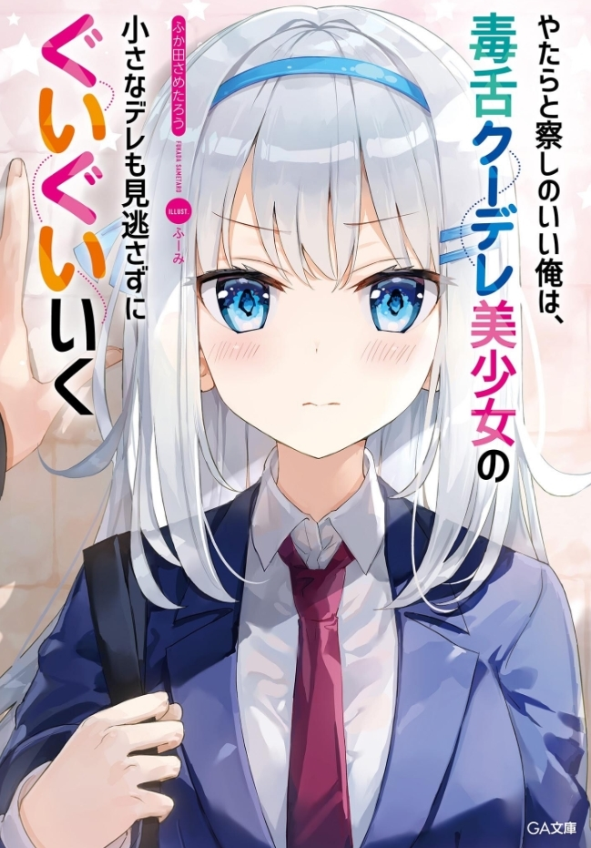

From Toxic Classmate To Girlfriend Goals
Novel Info's
Status: Completed/Finished
Genre: Comedy, Romance
Author: Fukada Sametarou
Illustrator: Fuumi
Volumes: 6
Original Publisher: GA Bunko, Softbank Creative
English Publisher: Tentai Books
Fan Translation: N/A
Description/Sypnosis
Shirogane Koyuki, a girl known for her beauty and equally harsh tone, giving her the nickname ‘Venomous Snow White’, is saved by Sasahara Naoya as a man tried to hit on her.
She may try to act strong, but on the inside, she is merely a young girl. Having been saved by Naoya, Koyuki falls for him, and Naoya on his end falls for Koyuki’s innocent and cute attitude.
Both fail to be honest with each other, but eventually bring themselves closer to admit their feelings for each other.
Download Links
Epub & Pdf